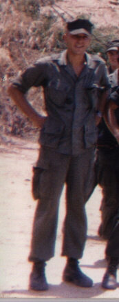
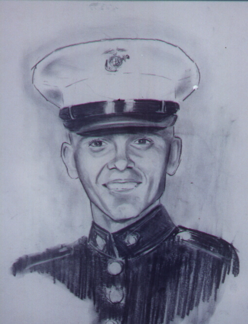

Gerald H. Anderson
 
Gerald H. Anderson
"Andy"
Born July 14, 1941
Died August 12, 2000
59 Years 29 Days
God saw you getting tired and a cure was not to be. So he put his arm around you and whispered "Come to Me" With tearful eyes we watched you, and saw you pass away. Although we loved you dearly, we could not make you stay. A golden heart stopped beating, hard working hands at rest. God broke our hearts to prove to us He only takes the best.
The following "Tribute" to Andy was written by Ronald E. Hoover, Capt. USMC Ret. These words were read with a tearful eye and a saddened heart while placing Andy to rest on 16 August 2000 at Highland Memorial Park, Johnston, Rhode Island. Four members of the "Hunters" participated in the ceremony - Ron Hoover, Paul Ringwood, Jim "Doc" Tyler, and George Neville.
He has gone beyond the ray of sight into the glory of morning light. Out of reach from sorrow and despair safe in the shelter of our Fathers care. Weep not for him - say he is not dead for he has gone one step ahead. Faith looks beyond this time of grief and pain love still abides and we shall meet again.
Andy you are at peace now without pain.
We will see you again.
My Brother - My Best Friend